Chapter 5 Results
- Line graph of mortality and incidence
- Line graph of total caloric intake and caloric intake by major food group
- Line graph of specific foods
- Scatterplot of total caloric intake and caloric intake by major food group vs cancer mortality
- Scatterplot of total caloric intake and caloric intake by major food group vs cancer incidence
- Scatterplot of specific foods vs cancer incidence/mortality
- Bargraph of R-squared values/correlation coefficients
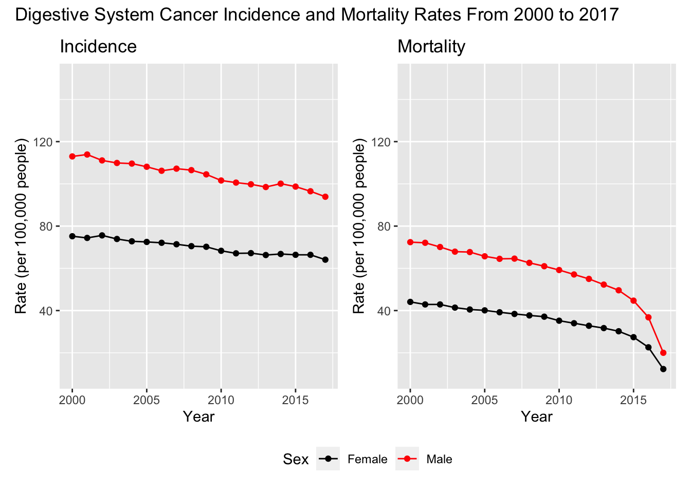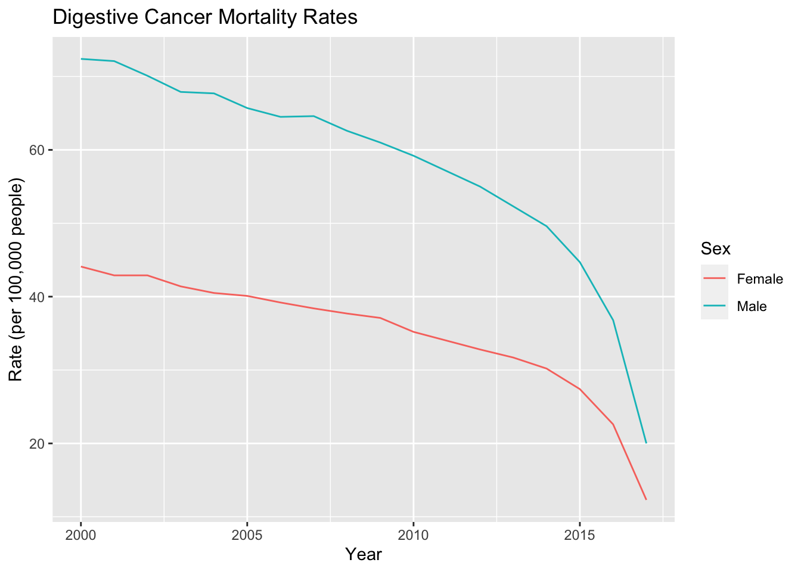
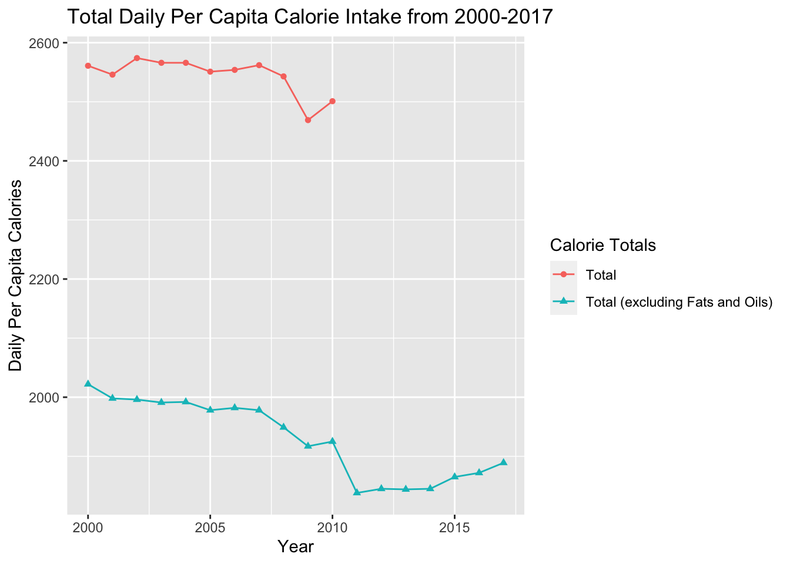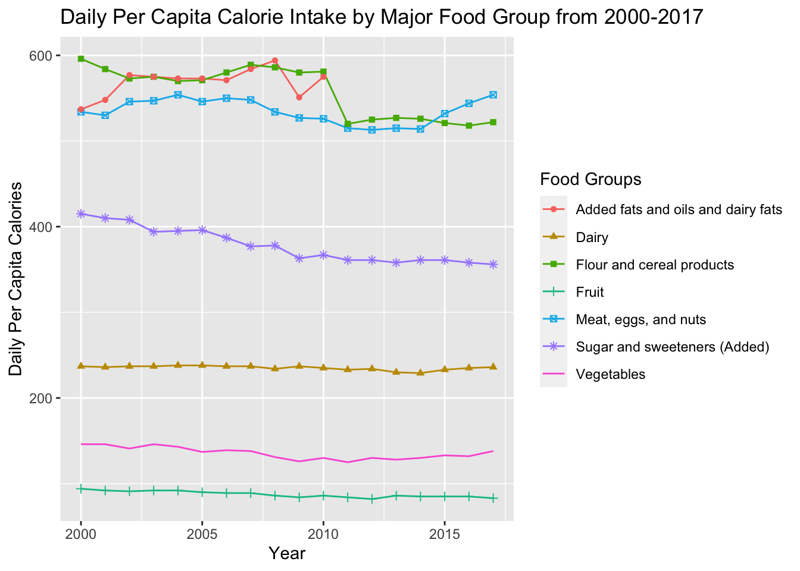
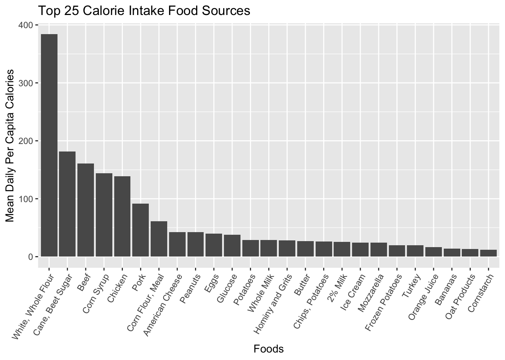
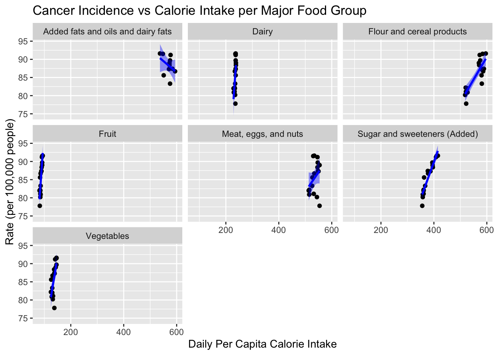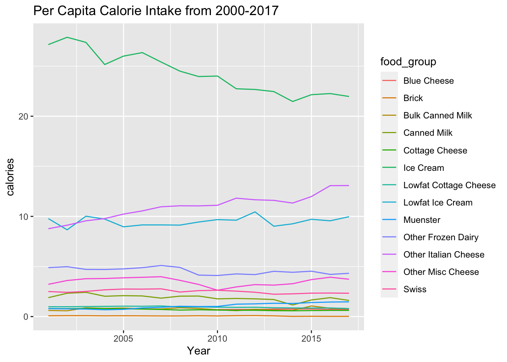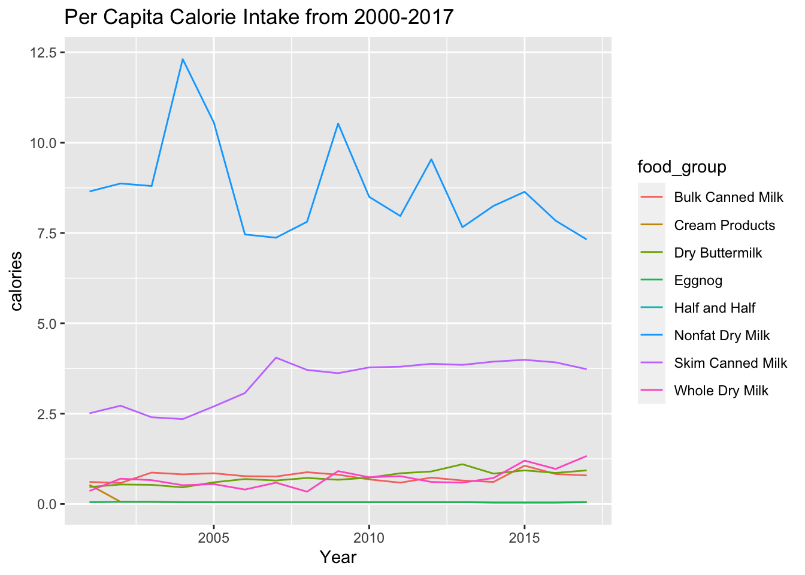
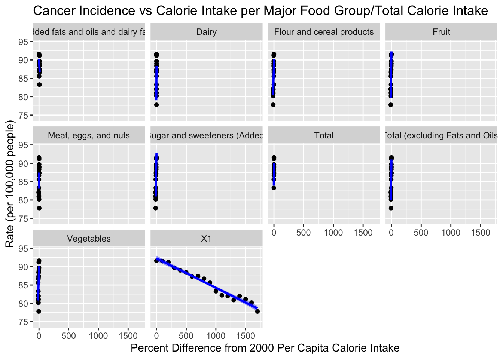
#Scatter plots
## [1] 415 415 410 410 408 408 394 394 395 395 396 396 387 387 377 377 378 378 363 363 367 367 361 361 361 361 358 358 361 361 361 361 358 358 356 356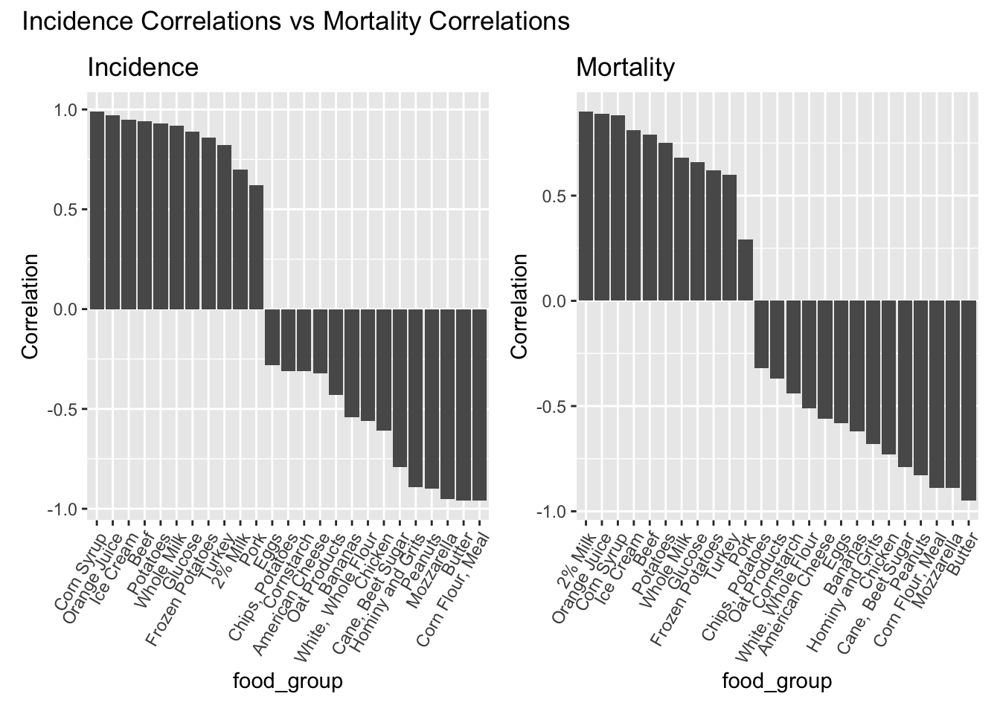
## [1] 173.75 173.75 172.91 172.91 173.69 173.69 168.16 168.16 165.59 165.59 163.49 163.49 160.76 160.76 155.28 155.28 146.35 146.35 138.04 138.04 134.43 134.43 129.80 129.80 127.22 127.22 121.55
## [28] 121.55 120.62 120.62 118.24 118.24 115.08 115.08 110.74 110.74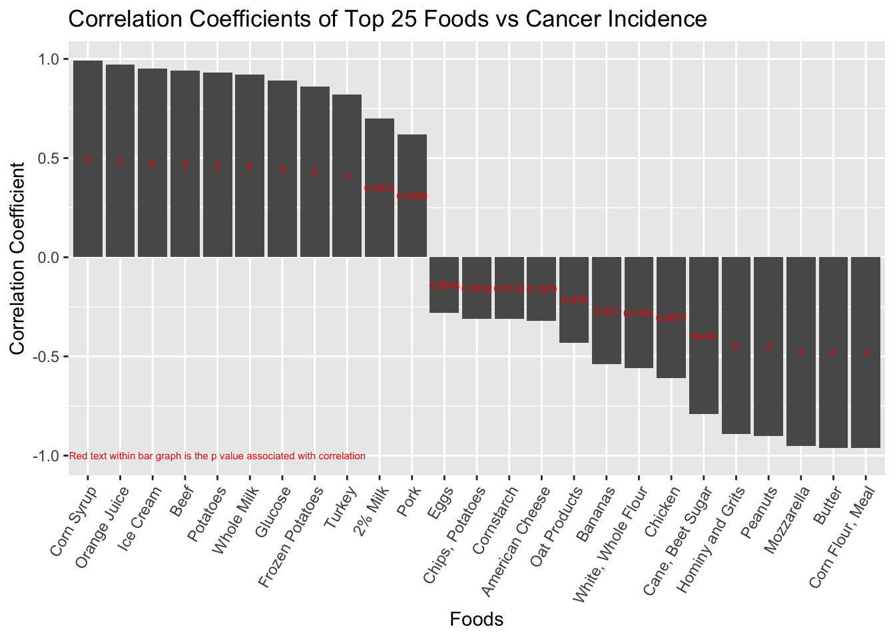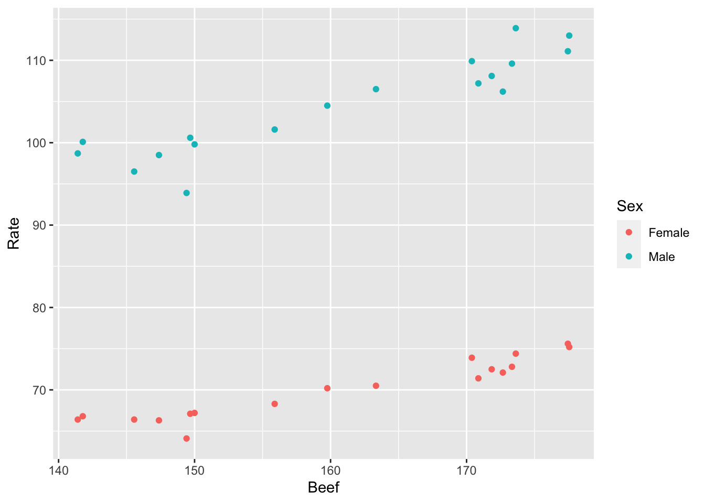